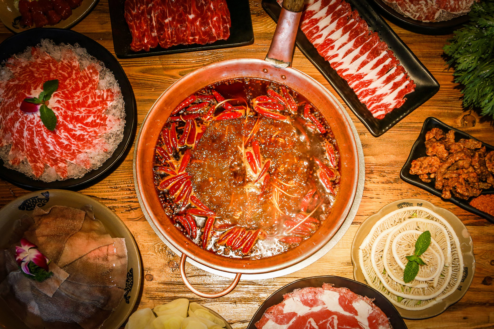

Zucchini Fritters
Origin: Unknown Source: www.niftyrecipe.com Category: Side dish/main dish

I found this recipe for zucchini fritters on a food blog when I was looking for quick and easy dishes to make during undergrad. It uses minimal ingredients and can be done in less than half an hour. They’re delicious and filling and go great with dipping sauces.
Recipe Ingredients
- Zucchini
- Egg
- Flour
- Vegetable/seed oil
- Garlic
- Salt and pepper
Recipe Steps
- Combine eggs, salt, and pepper and whisk
- Add pressed garlic
- Grate the zucchini and squeeze the moisture out of it
- Add zucchini and flour and mix
- Heat oil in pan and add dollops of batter
- Serve with or without dipping sauce
Additional Food images


Guacamole
Origin: Mexican Source: my recipe Category: Appetizer

Guacamole is a Mexican dip made from mashed avocados, tomatoes, onions, cilantro, lime juice, and chili pepper, creating a creamy, zesty, and versatile condiment often enjoyed with tortilla chips, tacos, and more.
Recipe Ingredients
- Avocado
- Lime
- Salt
- Onion
- Tomato
- Cilantro
Recipe Steps
- Slice three ripe avocados in half
- Scoop them into a mixing bowl
- Use a fork to gently mash them
- Add the onions, tomatoes, cilantro, jalapeno pepper, garlic, lime juice and salt and stir everything together.
Additional Food images


Hot pot
Origin: Chinese Source: my own recipe Category: Main dish
Hot pot - is the most famous and favorite dish in Chongqing. Chongqing local people consider the hot pot a local specialty, which is noted for its peppery and hot taste, scalding yet fresh and tender. People gather around a small pot boiled with charcoal, electric or gas filled with flavorful and nutritious soup base.
Recipe Ingredients
- Pepper
- Butter
- Spices
- Beef
- Vegetables
- Tofu
Recipe Steps
- Use chili, butter, and Chinese spices to cook hot pot base.
- Pour the hot pot base ingredients into the pot, simmer over high heat and wait until the pot boils.
- Add meat, vegetables and soy products like tofu.
- After the ingredients are cooked, dip them in sesame oil and taste them.